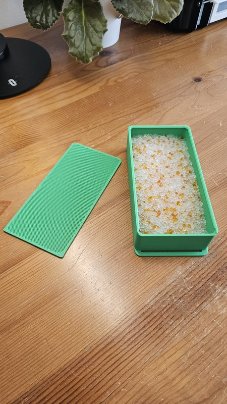

Dílna/Home Assistant
Byt, který se stará o rutinu.
Světla, žaluzie, energie i vzduch na jednom místě. Automatizace běží doma na Raspberry Pi a já mám pořád kontrolu nad daty. Chytrá domácnost, na kterou většinu času ani nemyslím.
O čem to je
Systém, ne hromada gadgetů
Nejde mi o blikající krabičky. Chtěl jsem systém, který ráno roztáhne žaluzie, večer ztlumí světla, hlídá vzduch a spotřebu a nikoho neobtěžuje. Když něco dělám ručně potřetí, je to kandidát na automatizaci.
Sekce je rozdělená podle toho, co hledáš: zařízení a hardware, automatizace, data a monitoring, tipy. A jeden díl o žaluziích, které oficiálně do Home Assistantu nejdou, tak jsem si postavil vlastní most.
Jak to vypadá
Ovládání na zdi a data v grafech


{kind=link}

Projekty a stránky
Podstránky
Zařízení a hardware
Raspberry Pi 5, Zigbee, tablet na zdi, senzory a zásuvky. Co doma běží a proč zrovna tohle.
50+ zařízeníOtevřít →AUTOMATIZACEAutomatizace
Osm kategorií od světel po energii. S ukázkami, které se dají zkopírovat.
35+ automatizacíOtevřít →DATAData a monitoring
Grafana, InfluxDB, Node-RED reporty. Jak vypadá týden domácnosti v grafech.
9 dashboardůOtevřít →TIPYTipy a triky
AI integrace, šablony, drobnosti, které šetří čas.
Otevřít →PROJEKTAluprof žaluzie přes ESP32
Vlastní RF most, protože oficiální cesta neexistuje. Odposlech ovladače, ESPHome, kalibrace a tři automatizace.
ESP32 · CC1101 · 433 MHzČíst →Z deníku
Zápisky k tématu
Pro zvědavé
Z čeho se to skládá
- Mozek
- Home Assistant na Raspberry Pi 5, ESPHome pro vlastní zařízení, Node-RED na reporty.
- Zařízení
- Zigbee senzory a světla, Wi-Fi zásuvky a světla v oddělené IoT síti, tablet na zdi jako ovládací panel.
- Data
- InfluxDB a Grafana na home serveru, energie po místnostech, teploty, vlhkost, spotřeba PC.
- Přístup
- Lokálně přes tablet a aplikaci, zvenku přes Tailscale. Cloud Home Assistantu vypnutý.